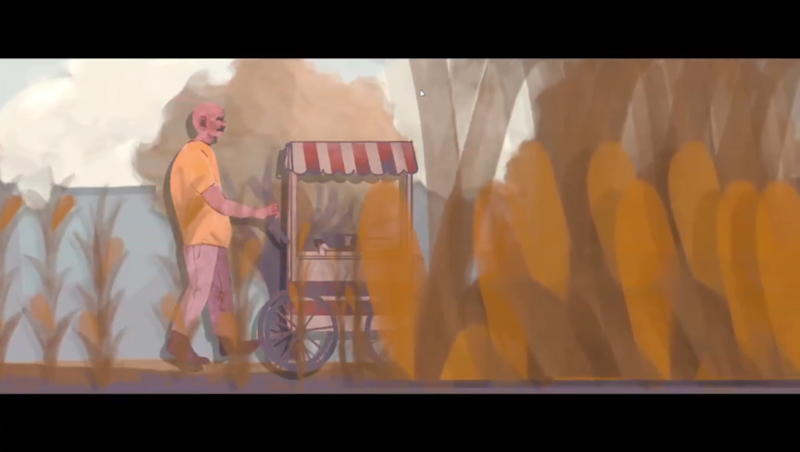
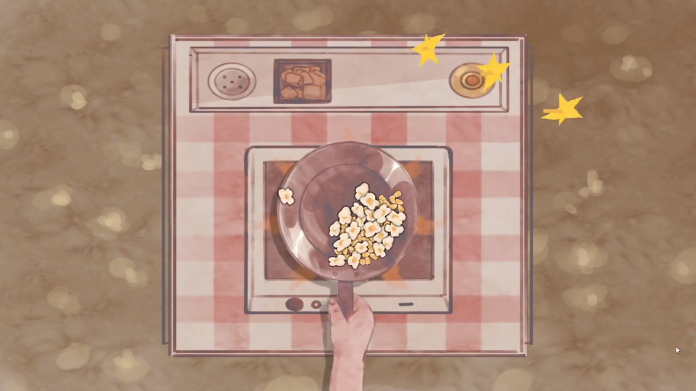
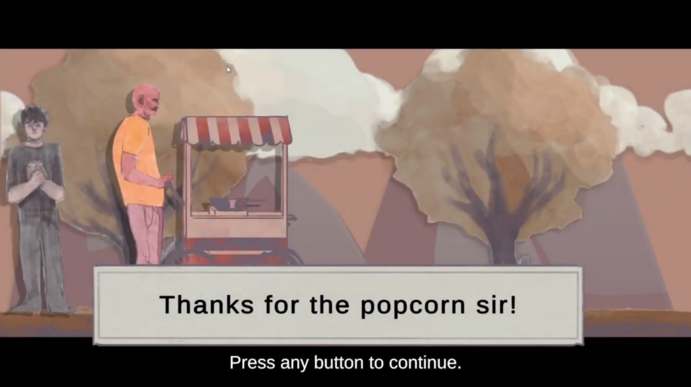

Prêmios e comentários em breve
Ainda não há registros para este jogo.

Pops: On the Go é uma experiência acolhedora e contemplativa em que você acompanha a rotina de um vendedor de pipoca enquanto reflete sobre seu trabalho, sua vida e seus sentimentos. Prepare pipocas controlando a frigideira e mantendo os grãos aquecidos até estourarem, sem pressão, sem derrota e no seu próprio ritmo. Com uma narrativa sensível, trilha sonora relaxante, visuais em aquarela totalmente animados e suporte completo a controles, o jogo convida você a desacelerar e aproveitar a simplicidade de cada momento.



Ainda não há registros para este jogo.